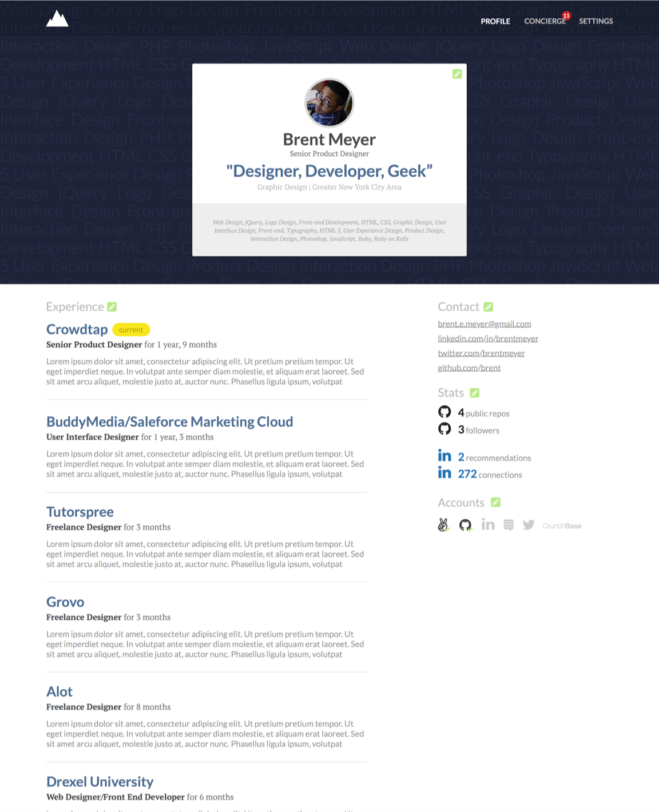
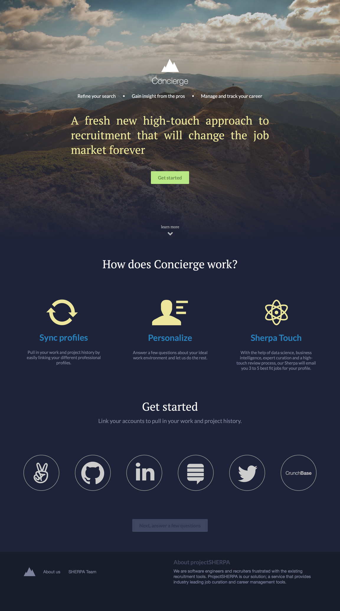

“A fresh new high-touch approach to recruitment that will change the job market forever”
projectSHERPA was a recruiting service that aimed to place its users in their ideal role. Doesn't every recruiting service aim to do that? Sure, but does every recruiting service build its experience around getting to know you as a person?
The Concierge product was the way to deliver that promise. Users who signed up were sent through a questionnaire that collected professional experience, desires, and goals in order to provide better results—kind of like a dating site.
The questionnaire served a dual purpose; it naturally built your profile page, too.
After completing your profile, a Sherpa calls you to follow up.
The elevator pitch said it was high-touch. That wasn't just for shits.
Here's that elevator pitch again, but in context on the landing page.
Responsible for
desktop interface, interaction, and experience design